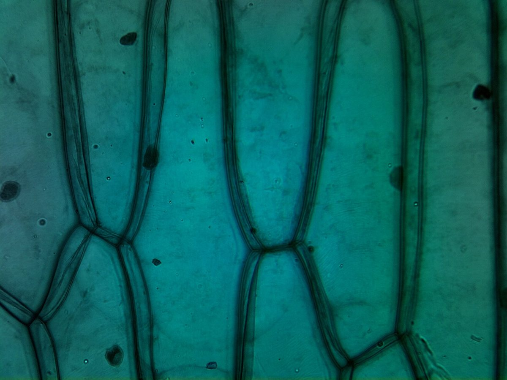
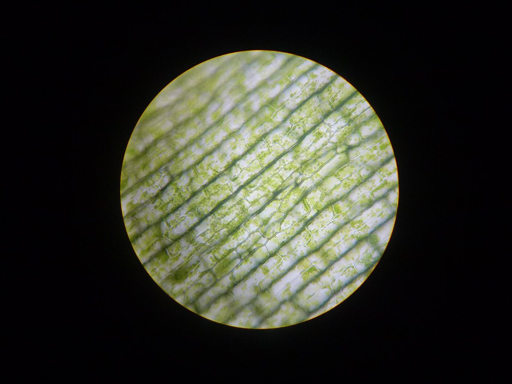
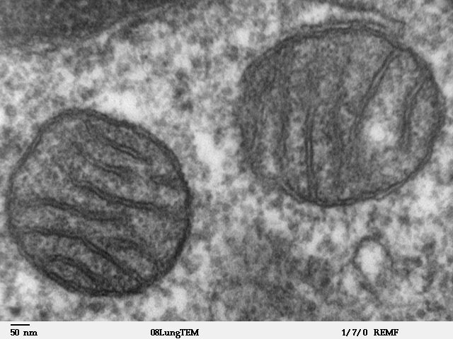
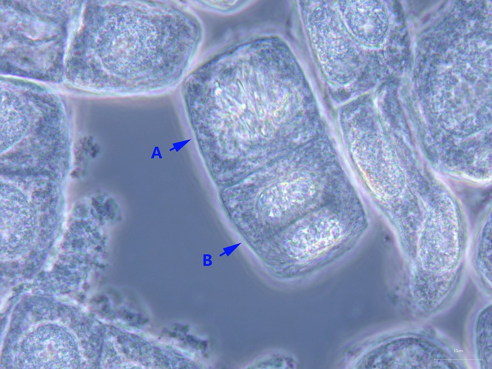

Строение клетки
Мембрана, цитоплазма, ядро. Оболочка, пластиды и вакуоли растений.
7 вопросов →Викторина по трём параграфам: строение растительной и животной клетки, её жизнедеятельность, размножение и рост. Каждый вопрос — с настоящей микрофотографией, а не рисунком.

×40Мембрана, цитоплазма, ядро. Оболочка, пластиды и вакуоли растений.
7 вопросов →Питание и диффузия, дыхание, выделение, обмен веществ, раздражимость.
6 вопросов →Хромосомы, этапы деления ядра, две дочерние клетки, рост организма.
6 вопросов →Вопрос 1
Проверь разбор ошибок и попробуй ещё раз.
Только главное — то, что встретится в вопросах.



Готов проверить себя?
Все изображения — реальные фотографии и микрофотографии с Wikimedia Commons.